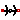
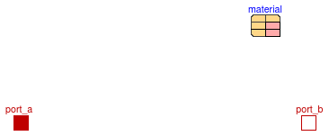
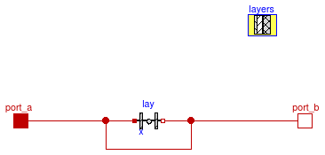

This package provides component models to compute heat conduction.
The package declares the constant nSupPCM,
which is equal to the number of support points that are used
to approximate the specific internal energy versus temperature relation.
This approximation is used by
Buildings.HeatTransfer.Conduction.SingleLayer
to replace the piece-wise linear function by a cubic hermite spline, with
linear extrapolation, in order to avoid state events during the simulation.
Extends from Modelica.Icons.VariantsPackage (Icon for package containing variants).
| Name | Description |
|---|---|
| SingleLayer | Model for single layer heat conductance |
|  SingleLayerCylinder | Heat conduction in a cylinder |
| MultiLayer | Model for heat conductance through a solid with multiple material layers |
| nSupPCM=6 | Number of support points to approximate u(T) releation, used only for phase change material |
| Package with base classes for Buildings.HeatTransfer.Conduction |
constant Integer nSupPCM = 6 "Number of support points to approximate u(T) releation, used only for phase change material";

If the material is a record that extends
Buildings.HeatTransfer.Data.Solids and its
specific heat capacity (as defined by the record material.c)
is non-zero, then this model computes transient heat conduction, i.e., it
computes a numerical approximation to the solution of the heat equation
ρ c (∂ T(s,t) ⁄ ∂t) = k (∂² T(s,t) ⁄ ∂s²),
where ρ is the mass density, c is the specific heat capacity per unit mass, T is the temperature at location s and time t and k is the heat conductivity. At the locations s=0 and s=x, where x is the material thickness, the temperature and heat flow rate is equal to the temperature and heat flow rate of the heat ports.
If the material is declared using a record of type
Buildings.HeatTransfer.Data.SolidsPCM, the heat transfer
in a phase change material is computed.
The record
Buildings.HeatTransfer.Data.SolidsPCM
declares the solidus temperature TSol,
the liquidus temperature TLiq and the latent heat of
phase transformation LHea.
For heat transfer with phase change, the specific internal energy u
is the dependent variable, rather than the temperature.
Therefore, the governing equation is
ρ (∂ u(s,t) ⁄ ∂t) = k (∂² T(s,t) ⁄ ∂s²).
The constitutive relation between specific internal energy u and temperature T is defined in Buildings.HeatTransfer.Conduction.BaseClasses.enthalyTemperature by using cubic hermite spline interpolation with linear extrapolation.
If material.c=0, or if the material extends
Buildings.HeatTransfer.Data.Resistances,
then steady-state heat conduction is computed. In this situation, the heat
flow between its heat ports is
Q = A k ⁄ x (Ta-Tb),
where A is the cross sectional area, x is the layer thickness, Ta is the temperature at port a and Tb is the temperature at port b.
To spatially discretize the heat equation, the construction is
divided into compartments with material.nSta ≥ 1 state variables.
The state variables are connected to each other through thermal conductors.
There is also a thermal conductor
between the surfaces and the outermost state variables. Thus, to obtain
the surface temperature, use port_a.T (or port_b.T)
and not the variable T[1].
Each compartment has the same material properties.
To build multi-layer constructions,
use
Buildings.HeatTransfer.Conduction.MultiLayer instead of this model.
Extends from Buildings.HeatTransfer.Conduction.BaseClasses.PartialConductor (Partial model for heat conductor).
| Type | Name | Default | Description |
|---|---|---|---|
| Area | A | Heat transfer area [m2] | |
| ThermalResistance | R | if (material.R == 0) then ma... | Thermal resistance of construction [K/W] |
| Material | material | redeclare parameter Data.Bas... | Material from Data.Solids, Data.SolidsPCM or Data.Resistances |
| Initialization | |||
| Boolean | steadyStateInitial | false | =true initializes dT(0)/dt=0, false initializes T(0) at fixed temperature using T_a_start and T_b_start |
| Temperature | T_a_start | 293.15 | Initial temperature at port_a, used if steadyStateInitial = false [K] |
| Temperature | T_b_start | 293.15 | Initial temperature at port_b, used if steadyStateInitial = false [K] |
| Type | Name | Description |
|---|---|---|
| HeatPort_a | port_a | Heat port at surface a |
| HeatPort_b | port_b | Heat port at surface b |
model SingleLayer "Model for single layer heat conductance"
extends Buildings.HeatTransfer.Conduction.BaseClasses.PartialConductor(
final R=if (material.R == 0) then material.x/material.k/A else material.R/A);
// if material.R == 0, then the material specifies material.k, and this model specifies x
// For resistances, material.k need not be specified, and hence we use material.R
// The value T[:].start is used by the solver when finding initial states
// that satisfy dT/dt=0, which requires solving a system of nonlinear equations
// if the convection coefficient is a function of temperature.
Modelica.SIunits.Temperature T[nSta](start=
{T_a_start+(T_b_start-T_a_start) * UA *
sum(1/(if (k==1 or k==nSta+1) then UAnSta2 else UAnSta) for k in 1:i) for i in 1:nSta},
each nominal = 300) "Temperature at the states";
Modelica.SIunits.HeatFlowRate Q_flow[nSta+1]
"Heat flow rate from state i to i+1";
Modelica.SIunits.SpecificInternalEnergy u[nSta](start=
material.c*{T_a_start+(T_b_start-T_a_start) * UA *
sum(1/(if (k==1 or k==nSta+1) then UAnSta2 else UAnSta) for k in 1:i) for i in 1:nSta},
each nominal = 270000)
"Definition of specific internal energy (enthalpy in solids)!";
replaceable parameter Data.BaseClasses.Material material
"Material from Data.Solids, Data.SolidsPCM or Data.Resistances";
parameter Boolean steadyStateInitial=false
"=true initializes dT(0)/dt=0, false initializes T(0) at fixed temperature using T_a_start and T_b_start";
parameter Modelica.SIunits.Temperature T_a_start=293.15
"Initial temperature at port_a, used if steadyStateInitial = false";
parameter Modelica.SIunits.Temperature T_b_start=293.15
"Initial temperature at port_b, used if steadyStateInitial = false";
protected
final parameter Integer nSta(min=1) = material.nSta
"Number of state variables";
final parameter Modelica.SIunits.ThermalConductance UAnSta = UA*nSta
"Thermal conductance between nodes";
final parameter Modelica.SIunits.ThermalConductance UAnSta2 = 2*UAnSta
"Thermal conductance between nodes and surface boundary";
parameter Modelica.SIunits.Mass m = A*material.x*material.d/material.nSta
"Mass associated with the temperature state";
parameter Modelica.SIunits.HeatCapacity C = m*material.c
"Heat capacity associated with the temperature state";
parameter Modelica.SIunits.SpecificInternalEnergy ud[Buildings.HeatTransfer.Conduction.nSupPCM](each fixed=false)
"Support points for derivatives (used for PCM)";
parameter Modelica.SIunits.Temperature Td[Buildings.HeatTransfer.Conduction.nSupPCM](each fixed=false)
"Support points for derivatives (used for PCM)";
parameter Real dT_du[Buildings.HeatTransfer.Conduction.nSupPCM](each fixed=false, each unit="kg.K2/J")
"Derivatives dT/du at the support points (used for PCM)";
initial equation
// The initialization is only done for materials that store energy.
if not material.steadyState then
if steadyStateInitial then
if material.phasechange then
der(u) = zeros(nSta);
else
der(T) = zeros(nSta);
end if;
else
for i in 1:nSta loop
T[i] = T_a_start+(T_b_start-T_a_start) * UA *
sum(1/(if (k==1 or k==nSta+1) then UAnSta2 else UAnSta) for k in 1:i);
end for;
end if;
end if;
if material.phasechange then
(ud, Td, dT_du) = Buildings.HeatTransfer.Conduction.BaseClasses.der_temperature_u(
material=material);
else
ud = zeros(Buildings.HeatTransfer.Conduction.nSupPCM);
Td = zeros(Buildings.HeatTransfer.Conduction.nSupPCM);
dT_du = zeros(Buildings.HeatTransfer.Conduction.nSupPCM);
end if;
equation
port_a.Q_flow = +Q_flow[1];
port_b.Q_flow = -Q_flow[nSta+1];
port_a.T-T[1] = Q_flow[1]/UAnSta2;
T[nSta] -port_b.T = Q_flow[nSta+1]/UAnSta2;
for i in 2:nSta loop
// Q_flow[i] is heat flowing from (i-1) to (i)
T[i-1]-T[i] = Q_flow[i]/UAnSta;
end for;
// Steady-state heat balance
if material.steadyState then
for i in 2:nSta+1 loop
Q_flow[i] = Q_flow[1];
if material.phasechange then
// Phase change material
T[i-1]=Buildings.HeatTransfer.Conduction.BaseClasses.temperature_u(
ud=ud,
Td=Td,
dT_du=dT_du,
u=u[i-1]);
else
// Regular material
u[i-1]=material.c*T[i-1];
end if;
end for;
else
// Transient heat conduction
if material.phasechange then
// Phase change material
for i in 1:nSta loop
der(u[i]) = (Q_flow[i]-Q_flow[i+1])/m;
// Recalculation of temperature based on specific internal energy
T[i]=Buildings.HeatTransfer.Conduction.BaseClasses.temperature_u(
ud=ud,
Td=Td,
dT_du=dT_du,
u=u[i]);
end for;
else
// Regular material
for i in 1:nSta loop
der(T[i]) = (Q_flow[i]-Q_flow[i+1])/C;
u[i]=material.c*T[i];
end for;
end if;
end if;
end SingleLayer;

If the heat capacity of the material is non-zero, then this model computes transient heat conduction, i.e., it computes a numerical approximation to the solution of the heat equation
ρ c ( ∂ T(r,t) ⁄ ∂t ) = k ( ∂² T(r,t) ⁄ ∂r² + 1 ⁄ r ∂ T(r,t) ⁄ ∂r ),
where ρ is the mass density, c is the specific heat capacity per unit mass, T is the temperature at location r and time t and k is the heat conductivity. At the locations r=ra and r=rb, the temperature and heat flow rate are equal to the temperature and heat flow rate of the heat ports.
If the heat capacity of the material is set to zero, then steady-state heat flow is computed using
Q = 2 π k (Ta-Tb)⁄ ln(ra ⁄ rb),
where ra is the internal radius, rb is the external radius, Ta is the temperature at port a and Tb is the temperature at port b.
To spatially discretize the heat equation, the construction is
divided into compartments with material.nSta ≥ 1 state variables.
The state variables are connected to each other through thermal conductors.
There is also a thermal conductor
between the surfaces and the outermost state variables. Thus, to obtain
the surface temperature, use port_a.T (or port_b.T)
and not the variable T[1].
| Type | Name | Default | Description |
|---|---|---|---|
| Generic | material | redeclare parameter Building... | Material thermal properties |
| Height | h | Height of the cylinder [m] | |
| Radius | r_a | Internal radius [m] | |
| Radius | r_b | External radius [m] | |
| Integer | nSta | Number of state variables | |
| Real | griFac | 2 | Grid factor for spacing |
| Initialization | |||
| Temperature | TInt_start | 293.15 | Initial temperature at port_a, used if steadyStateInitial = false [K] |
| Temperature | TExt_start | 293.15 | Initial temperature at port_b, used if steadyStateInitial = false [K] |
| Boolean | steadyStateInitial | false | true initializes dT(0)/dt=0, false initializes T(0) at fixed temperature using T_a_start and T_b_start |
| Type | Name | Description |
|---|---|---|
| HeatPort_a | port_a | Heat port at surface a |
| HeatPort_b | port_b | Heat port at surface b |
model SingleLayerCylinder "Heat conduction in a cylinder"
replaceable parameter Buildings.HeatTransfer.Data.Soil.Generic material
"Material thermal properties";
parameter Modelica.SIunits.Height h "Height of the cylinder";
parameter Modelica.SIunits.Radius r_a "Internal radius";
parameter Modelica.SIunits.Radius r_b "External radius";
parameter Integer nSta(min=1) "Number of state variables";
parameter Modelica.SIunits.Temperature TInt_start=293.15
"Initial temperature at port_a, used if steadyStateInitial = false";
parameter Modelica.SIunits.Temperature TExt_start=293.15
"Initial temperature at port_b, used if steadyStateInitial = false";
parameter Boolean steadyStateInitial=false
"true initializes dT(0)/dt=0, false initializes T(0) at fixed temperature using T_a_start and T_b_start";
parameter Real griFac(min=1) = 2 "Grid factor for spacing";
Modelica.SIunits.TemperatureDifference dT "port_a.T - port_b.T";
Modelica.Thermal.HeatTransfer.Interfaces.HeatPort_a port_a
"Heat port at surface a";
Modelica.Thermal.HeatTransfer.Interfaces.HeatPort_b port_b
"Heat port at surface b";
Modelica.SIunits.Temperature T[nSta](start=
{TInt_start+ (TExt_start-TInt_start)/Modelica.Math.log(r_b/r_a)
*Modelica.Math.log((r_a+(r_b-r_a)/(nSta)*(i-0.5))/r_a) for i in 1:nSta})
"Temperature of the states";
Modelica.SIunits.HeatFlowRate Q_flow[nSta+1]
"Heat flow rate from state i to i+1";
// Modelica.SIunits.TemperatureSlope der_T[nSta]
// "Time derivative of temperature (= der(T))";
protected
parameter Modelica.SIunits.Radius r[nSta+1](each fixed=false)
"Radius to the boundary of the i-th domain";
parameter Modelica.SIunits.Radius rC[nSta](each fixed=false)
"Radius to the center of the i-th domain";
final parameter Modelica.SIunits.SpecificHeatCapacity c= material.c
"Specific heat capacity";
final parameter Modelica.SIunits.ThermalConductivity k= material.k
"Thermal conductivity of the material";
final parameter Modelica.SIunits.Density d = material.d
"Density of the material";
parameter Modelica.SIunits.ThermalConductance G[nSta+1](each fixed=false)
"Heat conductance between the temperature nodes";
parameter Modelica.SIunits.HeatCapacity C[nSta](each fixed=false)
"Heat capacity of each state";
initial equation
assert(r_a < r_b, "Error: Model requires r_a < r_b.");
assert(0 < r_a, "Error: Model requires 0 < r_a.");
r[1] = r_a;
for i in 2:nSta+1 loop
r[i]= r[i-1] + ( r_b - r_a) * (1-griFac)/(1-griFac^(nSta)) * griFac^(i-2);
end for;
assert(abs(r[nSta+1]-r_b) < 1E-10, "Error: Wrong computation of radius. r[nSta+1]=" + String(r[nSta+1]));
// Radii to the center of the domain
for i in 1:nSta loop
rC[i] = (r[i]+r[i+1])/2;
end for;
// Conductance between nodes (which are in the center of the domain)
G[1] = 2*Modelica.Constants.pi*k*h/Modelica.Math.log(rC[1]/r_a);
G[nSta+1] = 2*Modelica.Constants.pi*k*h/Modelica.Math.log(r_b/rC[nSta]);
for i in 2:nSta loop
G[i] = 2*Modelica.Constants.pi*k*h/Modelica.Math.log(rC[i]/rC[i-1]);
end for;
// Heat capacity of each segment
for i in 1:nSta loop
C[i] = (d*Modelica.Constants.pi*c*h*((r[i+1])^2-(r[i])^2));
end for;
// The initialization is only done for materials that store energy.
if not material.steadyState then
if steadyStateInitial then
der(T) = zeros(nSta);
else
for i in 1:nSta loop
T[i]=TInt_start+ (TExt_start-TInt_start)/Modelica.Math.log(r_b/r_a) * Modelica.Math.log(rC[i]/r_a);
end for;
end if;
end if;
equation
dT = port_a.T - port_b.T;
port_a.Q_flow = +Q_flow[1];
port_b.Q_flow = -Q_flow[nSta+1];
Q_flow[1] = G[1] * (port_a.T-T[1]);
Q_flow[nSta+1] = G[nSta+1] * (T[nSta]-port_b.T);
for i in 2:nSta loop
Q_flow[i]=G[i]*(T[i-1]-T[i]);
// Q_flow[i] represents the heat flowing betwen two nodes
end for;
if material.steadyState then
for i in 2:nSta+1 loop
Q_flow[i]=Q_flow[1];
end for;
else
for i in 1:nSta loop
der(T[i])= (Q_flow[i]-Q_flow[i+1])/C[i];
end for;
end if;
end SingleLayerCylinder;

To obtain the surface temperature of the construction, use port_a.T (or port_b.T)
and not the variable T[1] because there is a thermal resistance between the surface
and the temperature state.
Extends from Buildings.HeatTransfer.Conduction.BaseClasses.PartialConductor (Partial model for heat conductor), Buildings.HeatTransfer.Conduction.BaseClasses.PartialConstruction (Partial model for multi-layer constructions).
| Type | Name | Default | Description |
|---|---|---|---|
| Area | A | Heat transfer area [m2] | |
| ThermalResistance | R | sum(lay[i].R for i in 1:nLay) | Thermal resistance of construction [K/W] |
| Generic | layers | redeclare parameter Building... | Construction definition from Data.OpaqueConstructions |
| Initialization | |||
| Boolean | steadyStateInitial | false | =true initializes dT(0)/dt=0, false initializes T(0) at fixed temperature using T_a_start and T_b_start |
| Temperature | T_a_start | 293.15 | Initial temperature at port_a, used if steadyStateInitial = false [K] |
| Temperature | T_b_start | 293.15 | Initial temperature at port_b, used if steadyStateInitial = false [K] |
| Type | Name | Description |
|---|---|---|
| HeatPort_a | port_a | Heat port at surface a |
| HeatPort_b | port_b | Heat port at surface b |
model MultiLayer
"Model for heat conductance through a solid with multiple material layers"
extends Buildings.HeatTransfer.Conduction.BaseClasses.PartialConductor(
final R=sum(lay[i].R for i in 1:nLay));
Modelica.SIunits.Temperature T[sum(nSta)](each nominal = 300)
"Temperature at the states";
Modelica.SIunits.HeatFlowRate Q_flow[sum(nSta)+nLay]
"Heat flow rate from state i to i+1";
extends Buildings.HeatTransfer.Conduction.BaseClasses.PartialConstruction;
protected
Buildings.HeatTransfer.Conduction.SingleLayer[nLay] lay(
each final A=A,
material = layers.material,
T_a_start = _T_a_start,
T_b_start = _T_b_start,
each steadyStateInitial = steadyStateInitial) "Material layer";
protected
parameter Modelica.SIunits.Temperature _T_a_start[nLay]=
{ T_b_start+(T_a_start-T_b_start) * 1/R * sum(lay[k].R for k in i:nLay) for i in 1:nLay}
"Initial temperature at port_a of respective layer, used if steadyStateInitial = false";
parameter Modelica.SIunits.Temperature _T_b_start[nLay]=
{ T_a_start+(T_b_start-T_a_start) * 1/R * sum(lay[k].R for k in 1:i) for i in 1:nLay}
"Initial temperature at port_b of respective layer, used if steadyStateInitial = false";
equation
// This section assigns the temperatures and heat flow rates of the layer models to
// an array that makes plotting the results easier.
for i in 1:nLay loop
for j in 1:nSta[i] loop
T[sum(nSta[k] for k in 1:(i-1)) +j] = lay[i].T[j];
end for;
for j in 1:nSta[i]+1 loop
Q_flow[sum(nSta[k] for k in 1:i-1)+(i-1)+j] = lay[i].Q_flow[j];
end for;
end for;
connect(port_a, lay[1].port_a);
for i in 1:nLay-1 loop
connect(lay[i].port_b, lay[i+1].port_a);
end for;
connect(lay[nLay].port_b, port_b);
end MultiLayer;